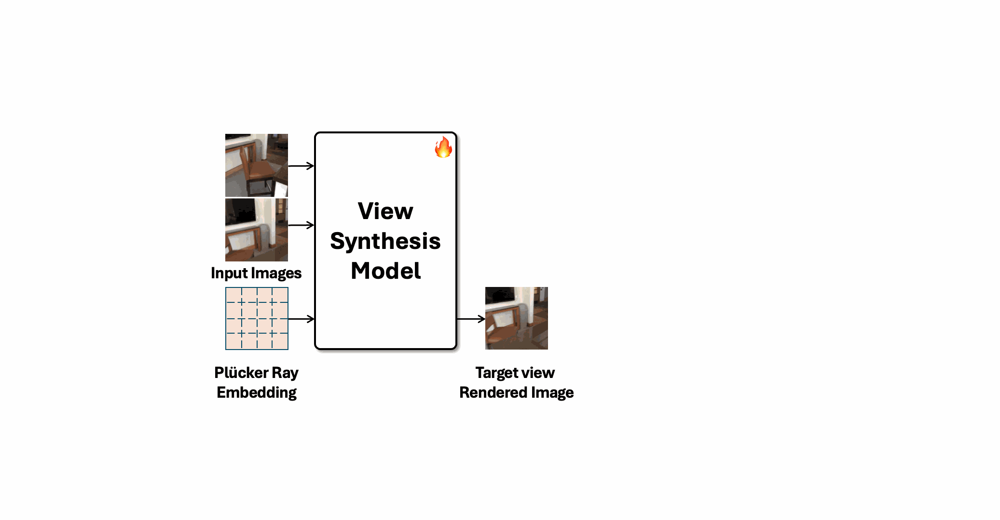
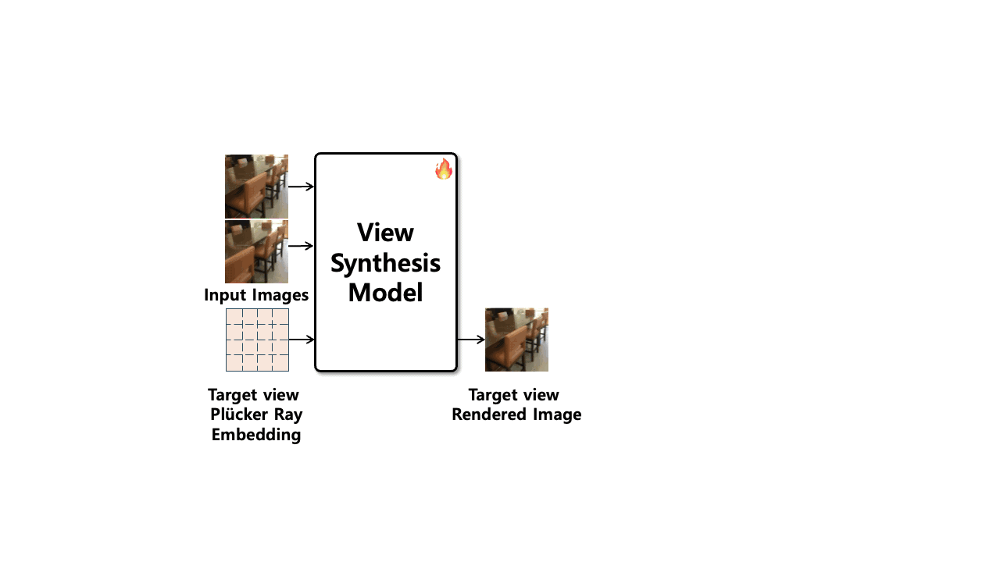
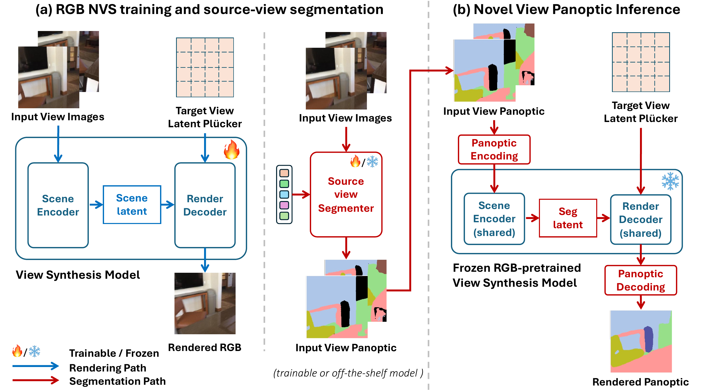
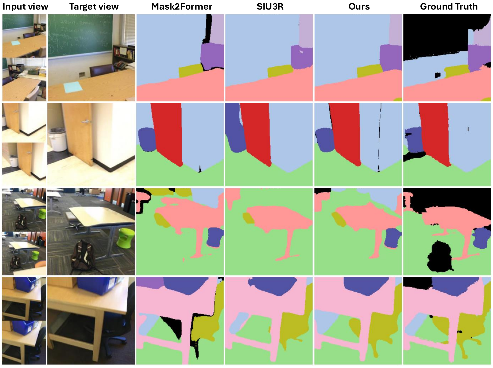
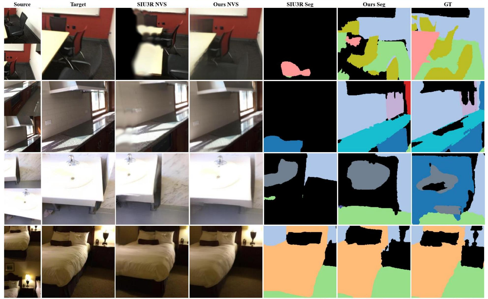
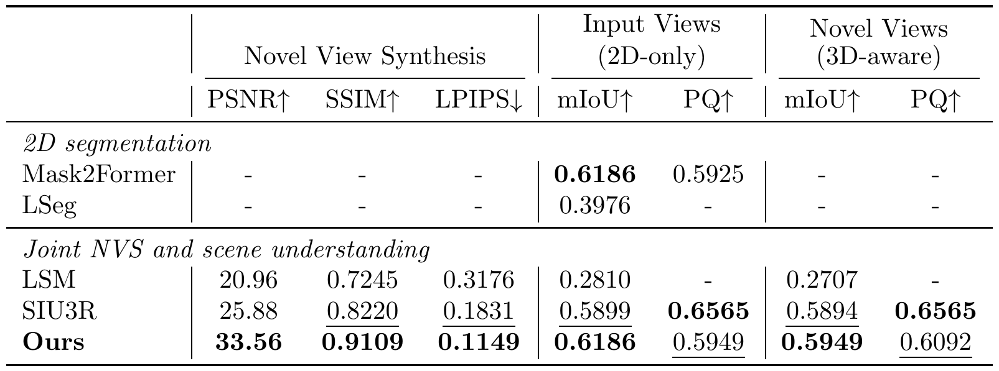
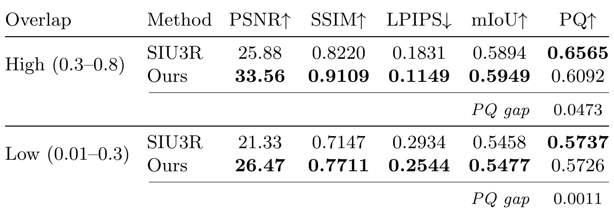
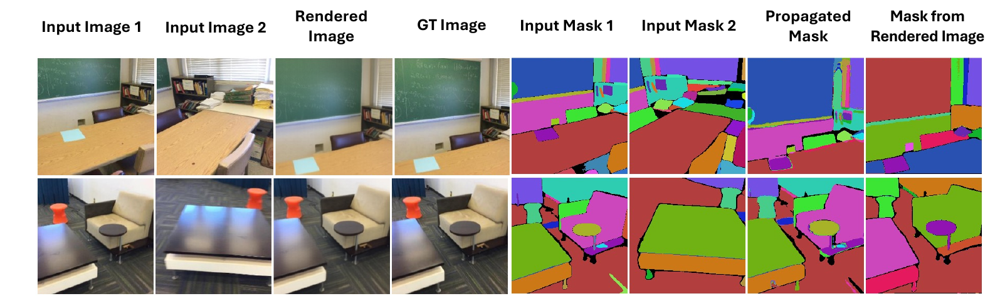
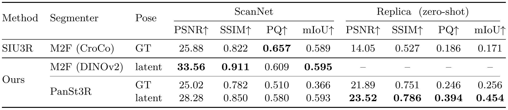

LVSM as a Signal Renderer
A large view synthesis model can serve as a renderer for panoptic label channels, not only RGB appearance.
ECCV 2026
TL;DR: We extend a large view synthesis model into a reconstruction-free panoptic renderer
that propagates source-view labels to novel viewpoints.
Large view synthesis models synthesize novel views through cross-view attention without explicit 3D representations, and recent studies have shown that they learn accurate spatial correspondence from RGB supervision alone. We use this learned correspondence to propagate non-RGB signals.

We present the first work to extend large view synthesis models beyond appearance rendering to 3D scene understanding. Given panoptic labels on the input views, we encode them into binary channel representations and pass them through the same model to render target-view segmentation.

A large view synthesis model can serve as a renderer for panoptic label channels, not only RGB appearance.
We propagate panoptic labels to novel views without NeRF, 3D Gaussians, or segmentation-specific training of the renderer.
The source-view segmenter and the target-view renderer remain modular, so different segmenters can provide input labels.
Given unposed source images, our method renders both RGB images and panoptic labels through the same large view synthesis model. We encode source-view panoptic maps as binary channels, propagate them with the frozen rendering path, and decode the rendered channels into target-view semantic and instance labels.

Panoptic propagation preserves rendering quality while achieving competitive segmentation with a frozen novel view synthesis model. The learned correspondence remains effective even when source and target views have limited overlap.




The propagation module does not depend on a specific source-view segmenter. It can use labels from trained panoptic models or off-the-shelf mask predictors without retraining the renderer.


We also test the same label-propagation pipeline with a posed LVSM. SAM2 provides source-view masks, and the frozen posed renderer propagates them to the target view without retraining.
@inproceedings{ryu2026extending,
title = {Extending a Large View Synthesis Model for Multi-view Panoptic Segmentation},
author = {Ryu, Kwonyoung and Lee, In-Jae and Jin, Jonghyun and Lee, Hyunjee and Lee, Jongmin and Park, Jaesik},
booktitle = {European Conference on Computer Vision (ECCV)},
year = {2026}
}This work was supported by IITP grant (RS-2021-II211343: AI Graduate School Program at Seoul National Univ., RS-2025-25442338: AI star Fellowship Support Program at Seoul National Univ., and RS-2026-25517417: Development of Compression, Reconstruction, and Rendering Technologies for Free-viewpoint Media). POSCO DX Company, Ltd. provided generous support for this research.